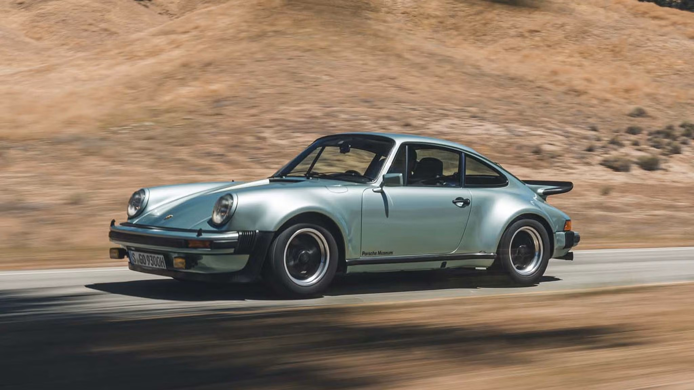
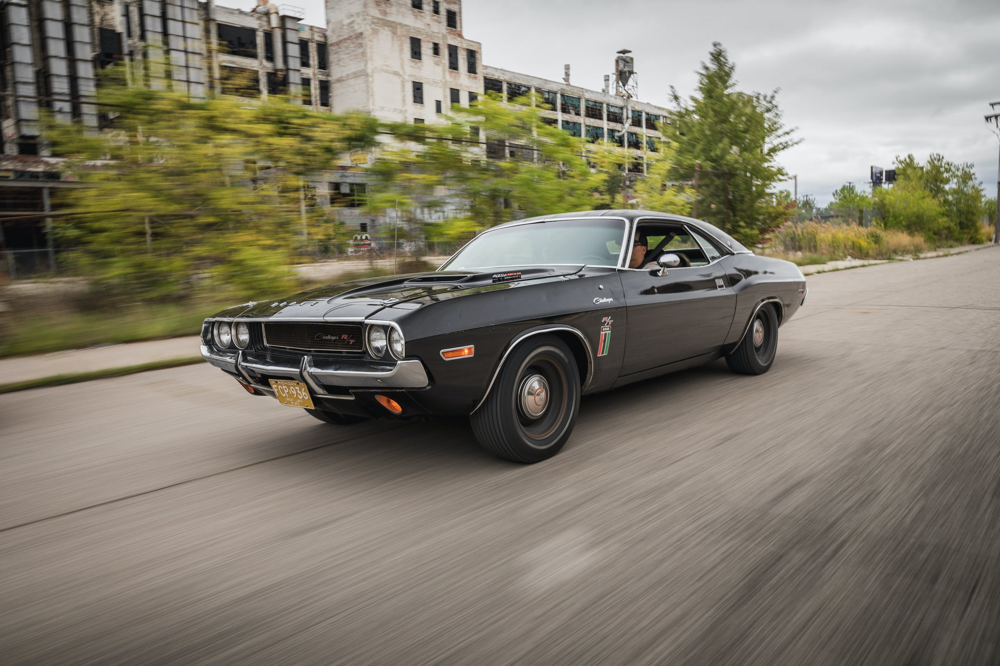
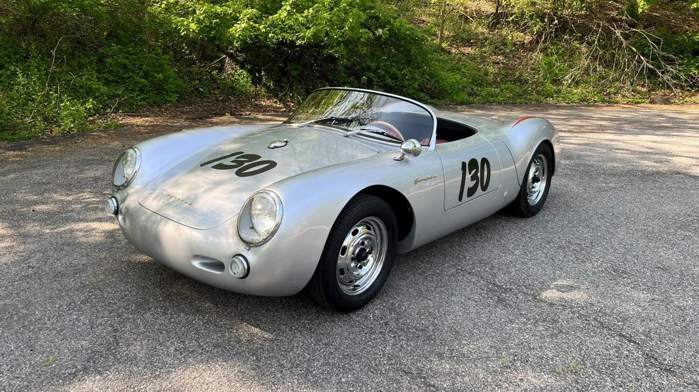
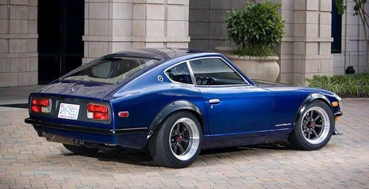
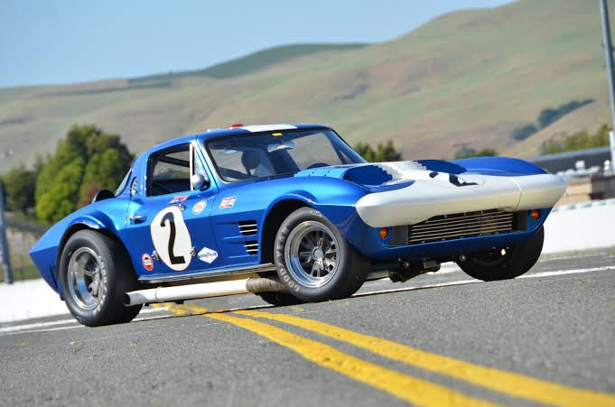
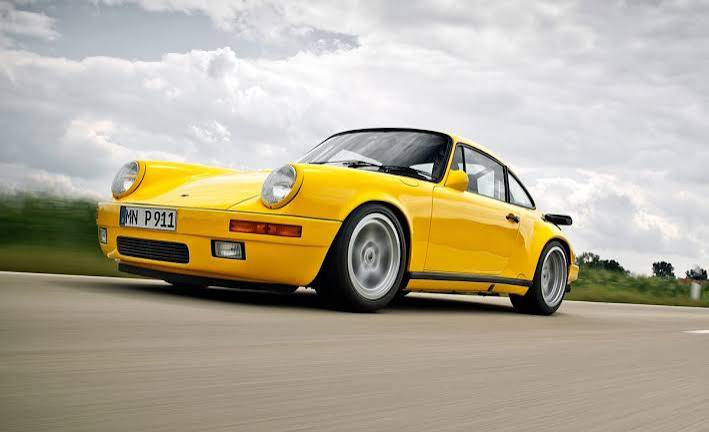
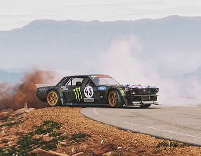
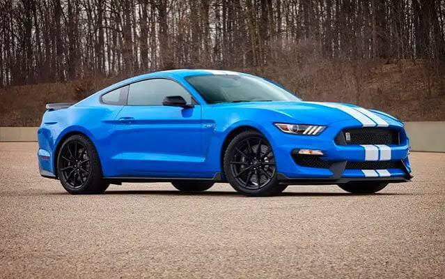

O folclore das pistas, as alcunhas malditas e os mistérios mecânicos. Nem todas as histórias do automobilismo se escrevem com tempos de volta; algumas são alimentadas pelo medo, pelo sobrenatural e pelo respeito ao desconhecido. Explora os mitos mais famosos abaixo.
O "Widowmaker"
Porsche 911 Turbo (Geração 930)
Na década de 1970, a Porsche colocou um motor turbo brutal no leve e traseiro 911. O resultado foi uma alcunha assustadora: "O Fazedor de Viúvas". Devido ao terrível turbo lag (o atraso na resposta do turbo), a potência não entrava de forma suave; vinha de repente, como uma explosão, a meio das curvas. Se o condutor não fosse um piloto profissional, o peso do motor na traseira fazia o carro rodar instantaneamente sem aviso prévio, criando uma lenda de perigo extremo nas estradas europeias.

The Black Ghost
Dodge Challenger 426 HEMI de 1970
Nas noites dos anos 70 em Detroit, um misterioso Dodge Challenger preto aparecia do nada nas corridas clandestinas de aceleração. Ele destruía toda a concorrência e, minutos após vencer, desaparecia na escuridão sem que ninguém conseguisse identificar o condutor ou seguir o carro. Durante décadas, foi tratado como um carro fantasma lendário. O mistério só foi resolvido recentemente: o condutor era Godfrey Qualls, um herói de guerra e polícia de Detroit que corria em segredo e escondia o carro na garagem para não perder o emprego.

Little Bastard
O Porsche 550 Spyder Amaldiçoado
A lenda do "Little Bastard" é o maior mito de maldição da cultura automóvel. Trata-se do Porsche 550 Spyder onde o ator James Dean perdeu a vida em 1955. Após o acidente, os destroços do carro foram comprados e associados a uma série de tragédias bizarras: o motor foi vendido a um médico que morreu num acidente na primeira corrida, a garagem onde o chassis estava guardado ardeu por completo, e o carro chegou a cair de cima de um camião de transporte, quebrando as pernas de um mecânico, antes de desaparecer misteriosamente sem deixar rasto.

Devil Z
Datsun Fairlady Z (S30) de Wangan
Nas autoestradas de Tóquio (Shuto Expressway), nasceu o mito do "Devil Z", um Datsun 240Z azul-escuro modificado ao extremo com um motor bi-turbo modificado para debitar mais de 600 cavalos. A lenda, que inspirou a cultura JDM global, dizia que o carro era rápido demais para ser controlado pelo ser humano, agindo como se estivesse possuído e rejeitando qualquer condutor que tentasse domar a sua velocidade brutal nas retas da Shuto nas madrugadas nipónicas.

Grand Sport
Chevrolet Corvette Grand Sport de 1963
O Corvette Grand Sport foi um projeto ultrassecreto criado pelo engenheiro Zora Arkus-Duntov para construir um protótipo leve capaz de destruir o domínio do Shelby Cobra nas pistas. O plano inicial era fabricar 125 unidades, mas quando a administração da General Motors descobriu o projeto clandestino, proibiu imediatamente o programa devido a um acordo de não-competição. Apenas 5 protótipos tinham sido construídos e, em vez de os destruir, os engenheiros esconderam-nos e venderam-nos em segredo a pilotos privados. Estes 5 carros sobreviventes tornaram-se os Corvettes mais raros, valiosos e lendários de sempre.

Yellowbird
RUF CTR de 1987
O "Yellowbird" não era um Porsche oficial, mas sim uma criação cirúrgica da preparadora alemã RUF com base num 911 Carrera. Ganhou esta alcunha icónica durante um teste da revista Road & Track, onde o seu tom amarelo brilhante contrastava com o céu cinzento da pista. O mito consolidou-se com o lendário vídeo "Faszination on the Nürburgring", que mostra o piloto Stefan Roser a domar o carro de 469 cavalos no Inferno Verde sem capacete, de t-shirt, a fazer piões controlados (drifts) a mais de 300 km/h e a lutar contra a direção a cada segundo. Tornou-se o símbolo supremo da condução analógica pura e perigosa.

Hoonicorn
Ford Mustang RTR V8 de 1965 (Ken Block)
O Hoonicorn não é apenas um carro de modificação; é uma lenda da era digital e o símbolo máximo do "Gymkhana". Nascido da mente do piloto Ken Block, este Mustang de 1965 foi transformado num monstro de tração integral equipado com um motor V8 biturbo alimentado a metanol, debitando uns impressionantes 1400 cavalos de potência. O mito consolidou-se em vídeos virais como "Climbkhana", onde Ken Block domou o carro à beira do abismo na perigosa subida de Pikes Peak, derrapando a centímetros de precipícios mortais. Com fumo a sair pelas quatro rodas e labaredas a saltar pelo capot, o Hoonicorn tornou-se um ícone imortal da cultura automóvel moderna, provando que a audácia e a engenharia extrema conseguem criar desenhos que desafiam as leis da física.

Crowd Killer
Ford Mustang (Geração S550)
Na era da internet e das redes sociais, nenhum carro gerou um meme tão temido e omnipresente como o Ford Mustang moderno, batizado ironicamente pela comunidade como o "Assassino de Multidões". O mito nasceu devido aos centenas de vídeos virais de encontros de automóveis (Cars & Coffee), onde condutores inexperientes tentavam sair do recinto a acelerar a fundo para impressionar o público. Com tração traseira, muita potência bruta no motor V8 e o controlo de tração desligado, o Mustang perdia frequentemente a aderência de forma repentina, galgando os passeios e indo direto contra as pessoas que assistiam. Tornou-se um aviso folclórico moderno sobre o perigo de subestimar a força mecânica americana.
